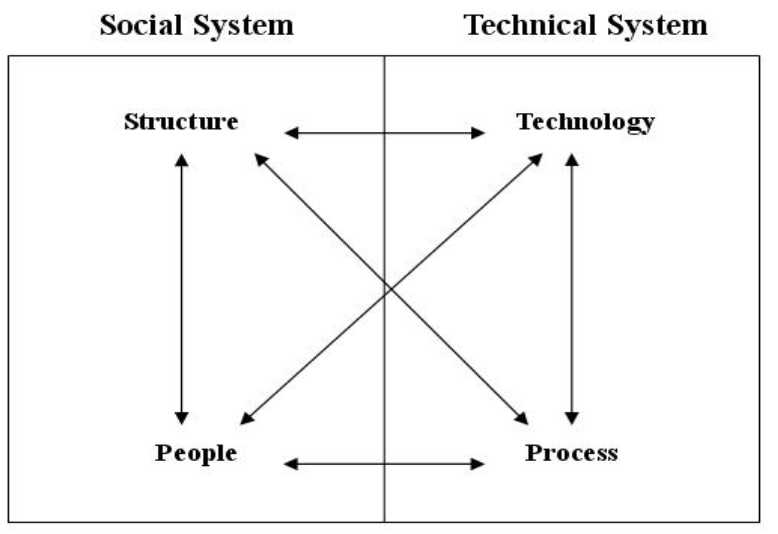
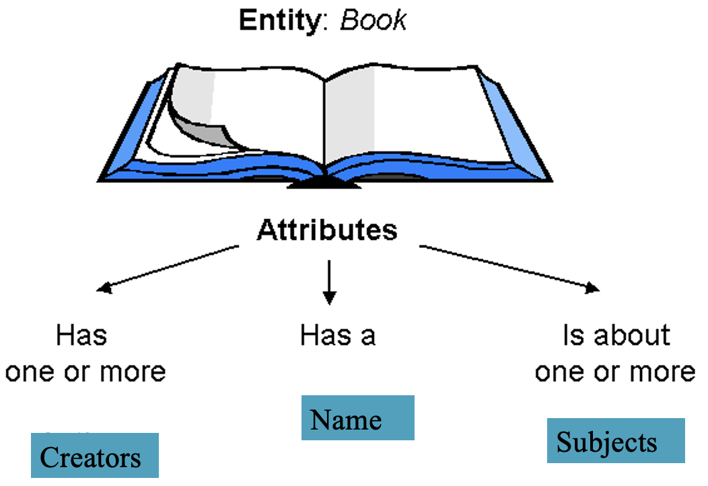
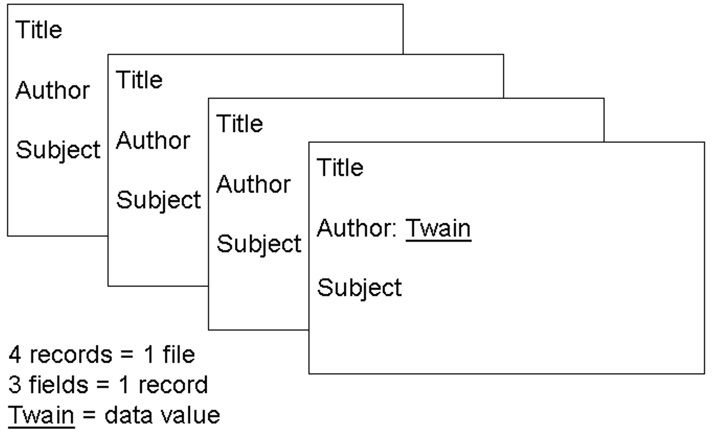
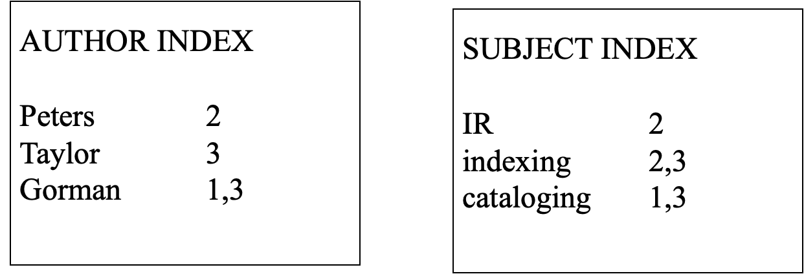
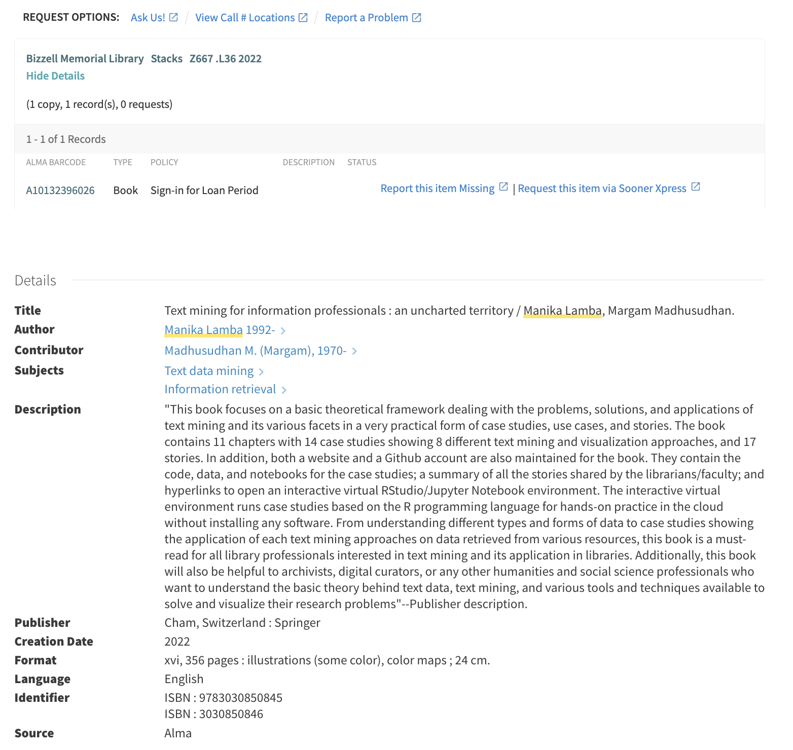
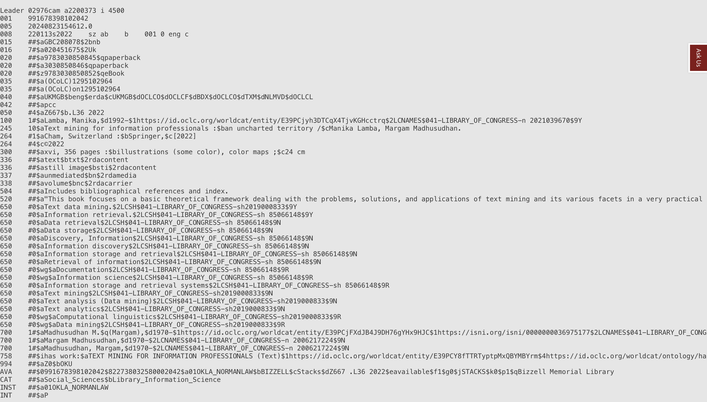

Systems and Structures for Organizing Information
LIS 5043: Organization of Information
Introduction
This week, we will examine different systems and how they are designed.
We will look at ways in which we evaluate IR systems.
Also, you will be learning more about how system design affects/impacts retrieval by users.
Keep in mind that a user-centered system should be based on what we know about how users search for and use information sources.
Think about HOW systems elements, metadata schemes, interfaces either enable or inhibit effective retrieval.
Information Systems
An information system comprises a set of resources for collecting, managing, and providing access to information
- These resources may involve:
- manual technologies
- automated technologies
Information Containers and Content
Information in an information system is in some tangible form – we can manipulate it
Information objects have two aspects:
Information container: physical embodiment of informationInformation content: intellectual contents of information object recorded in some fashion
Many information systems utilize representations or surrogates of the information objects
The surrogates are what get manipulated in most cases, but with Web, digital libraries, etc. we now access the object as well
Systems and Systems Thinking
System: Consists of a number of components working together to achieve some purpose- Two important aspects
- interacting components/subsystems
- purposeful
- System concepts
- Inputs
- Transformation processes
- Outputs
- Feedback
Four Components of an Information System
Structure of Information System
Information System As a System
- Considered from a systems perspective, an information system has:
- one or more goals and objectives
- an environment
- resources available to the system
- processes or system components
- management
- One system may be a subsystem for another system
- library system as subsystem in university system
- library catalog as subsystem in library system
Functions of Information Systems
- Selection
- Collection
- Storage
- Document Analysis & Representation
- File Organization
- Search Strategy & Retrieval
- Service/Dissemination
Information Retrieval Systems
ComponentsInterface- to allow user to communicate with systemDatabase- to store representations or info objects- text
- images
- numeric data
Matching Component- to match representations
Database Terminology
Database- Storage mechanism for data
- Collection of logically related data
Database Management System (DBMS)- Software for managing storage, organization, and retrieval of records from datbase
- Provides for creation and maintenance of one or more databases
- Examples: Oracle, Access, dBase, MySQL
Database Design
- Three Levels/Stages of Design as Models
- Conceptual Model
- Logical Model
- Physical Model
- From conceptualization to actual implementation
Conceptual Level/Model
Conceptual Level- Abstract view of real-world objects, processes or activities relevant to users
- Geared toward representations of entities and relationships
Entities- Distinct types of objects, bodies, agents
Attributes- Characteristics or properties of entities
Relationships- Meaningful associations between entities
Information Object Model
Logical Level/Model
- Geared towards representation of entities as data
File: collection of similarly structured recordsRecord: basic unit within a file- Set of related data items, or information units
Field: logical unit within a record- Spaces to receive data
Data: information entered in fieldsData Value: specific data entered in a field
Logical Model Example
Parallel Concepts
Real life- Collection
- Book
- Author
Conceptual- Set of Entities
- Entity
- Attribute
Logical- File
- Record
- Field
- Data value
The Organization of Information
Arlene G. Taylor
Physical Level/Model
Geared toward details of physical database implementation
Includes specifications for fields, data, file organization and access, etc.
Applies only to specific database
- Conceptual and logical models may be implemented in different DBMS
Database Schema
- Defines a database’s structure
- Identifies details about the DB record:
- fields
- datatypes
- value constraints
- Moves closer to the physical structure of the actual database implementation
Record Structure
- Record structure reflects the needs of the data model
- Attributes become structured into one or more fields
- Specifications for each field determined
- Fixed length or variable length
- Type of data in field
- Required, multiple entry
- Content validation
We Make Decisions About …
File type: type of data that goes into a field- Text, image, numeric
Entry validation: controls number of entries in field- Required, unique, single
Content Validation: limits data values that can be input in field. Often requires creation of list of authorized terms- Content validation list, controlled vocabulary, natural language
We Also Make Decision About …
Indexing: adding values to the fields using specific criteria and rules, deciding if a field is searchable or not- Indexing a field makes it a searchable field in the system
- A searchable field is considered an access point through which users can access the data in the fields of the records
Indexing
Indexing: Process of creating index for purpose of representing and providing access to information objects- May be performed by humans or computers
- Determines how system searches field
Index Entry: Any pointer or indicator included in an indexSome choices:
Word: indexes and searches field by single words separatelyTerm/phrase: indexes and searches field by complete entry, all words togetherCombination of Word/Phrase indexing
Indexing Specification
Indexing Example
Phrase IndexComplete User s Guide
Product Guide
Reference Manual
Word Indexcomplete
guide
manual
product
reference
s
user
Index File as Access Method
Index File: ordered (inverted) list of data entries drawn from one field in record
- Each index entry contains pointer to its record
- Index is specified during database creation
- Index entries are added automatically by database as data are entered in record fields
- Index file is linked to main file that contains records
Filing Order Specifications
Index Specifications:
- Word by word: not letter by letter
- Ignore leading articles: a, an, the
- Ignores stop words
- Numbers file numerically: not alphabetically
So What?
- Database specifications tell the system …
- What types of data it contains
- How to find data and records to retrieve
- How to sort data
- Without specifications …
- Every field would accept every kind of data
- Meaningful operations (e.g., calculations) could not be performed on data
- Retrieval would be slower and less effective
How Does this Relate to Retrieval?
- How do we get the data out of the database?
- The organization of records within a file holds the key!
- Some methods in finding location of record:
- Sequential search of records in the file (old method)
- Inverted index (most common)
- Full text algorithms (common in many systems)
- For bibliographic records, we often have multiple inverted indexes – provides for searchable fields.
Index File Example
Record structure: RecordID = key (linking) field
Index File Example

Index File Example
- Search term matches index entry (data value)
- Index entry points/links to record using key field
- Record is retrieved that contains data value
Databases We Know
MARC View
Databases We Know: Amazon
What TO DO Next
After reviewing this lecture, please proceed to the Data Modeling lecture (Forever Frogs)
Complete the data modeling exercise by working through the Data Modeling (Forever Frogs) presentation & worksheet